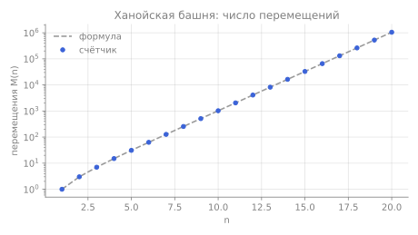
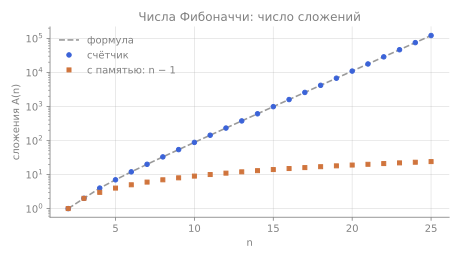
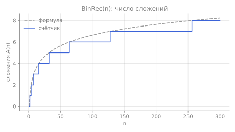
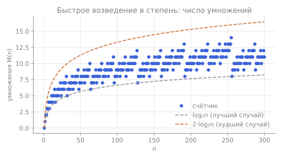

Модуль 2 · 5-дәріс · Левитин, §2.4–2.5
Рекурсивті алгоритмдерді талдау
Рекурсивті алгоритм бойынша рекуррентті қатынасты қалай құру, оны қалай шешу және экспоненциалдық тұзаққа қалай түспеу керек.
Оқыту мақсаттары мен нәтижелері
Модульдің мақсаты — өзін-өзі шақыратын алгоритмдерді талдауды үйрену. Мұнда қосындылардың орнына рекуррентті қатынастар пайда болады. Модуль 1-модульдегі талдау жоспарына және қосынды формулаларына сүйенеді.
Модульді меңгергеннен кейін сіз:
- жалпы талдау жоспарын рекурсивті алгоритмге қолдана аласыз;
- рекуррентті қатынасты құрып, бастапқы шартты рекурсиядан шығу жолы бойынша таба аласыз;
- рекуррентті қатынастарды кері алмастырулар әдісімен шешіп, жауапты математикалық индукциямен тексере аласыз;
- рекурсивті шақырулар ағашын құрып, ол бойынша шақыруларды санай аласыз;
- $\lfloor n/2\rfloor$ бар рекуррентті қатынастарды $n = 2^k$ үшін шешіп, жауапты тегістік ережесі бойынша барлық $n$-ге тарата аласыз;
- қайталанатын ішкі есептерді танып, оларды мемоизация немесе итерация арқылы жоя аласыз;
- рекурсияның жадын стек тереңдігі арқылы бағалап, құйрықты рекурсияның не беретінін түсіндіре аласыз.
Рекурсивті алгоритмдерге арналған жалпы жоспар
Бұл жоспардың 1-модульдегі жоспардан айырмашылығы — төртінші және бесінші қадамдарда (Левитин, §2.4):
- Кіріс өлшемінің параметрін таңдау.
- Негізгі операцияны анықтау.
- Оның орындалу саны бірдей өлшемді әртүрлі кірістерде өзгеше бола ала ма, соны тексеру. Егер бола алса — ең нашар, орташа және ең жақсы жағдайларды бөлек зерттеу.
- Негізгі операцияның орындалу саны үшін бастапқы шарты бар рекуррентті қатынас құру.
- Рекуррентті қатынасты шешу немесе, ең болмағанда, шешімнің өсу ретін анықтау.
Рекуррентті қатынас $M(n)$ шамасын кішірек аргументтердегі мәндері арқылы өрнектейді. Мысалы, $M(n) = M(n-1) + 1$: «$n$ үшін жұмыс = $n-1$ үшін жұмыс плюс бір операция». Мұндай тізбектер шексіз көп: $n$, $n + 5$, $n - 3$… Олардың біреуін таңдауға бастапқы шарт — ең кіші аргументтегі мән — мүмкіндік береді. Ол рекурсия тоқтайтын жолдан алынады: бұл жол ең кіші $n$-ді де, сол кездегі негізгі операциялар санын да көрсетеді.
Кері алмастырулар әдісі
Модульдің негізгі әдісі — кері алмастырулар әдісі. Әрекеттер реті:
- $x(n)$ үшін рекуррентті қатынасты жазыңыз.
- Ондағы $n$-ді $n-1$-ге ауыстырып, $x(n-1)$-ді $x(n-2)$ арқылы өрнектеңіз де, бастапқы теңдеуге қойыңыз.
- $x(n-2)$ үшін, содан кейін $x(n-3)$ үшін қайталаңыз. Әдетте заңдылықты көру үшін үш жол жеткілікті.
- $i$ алмастырудан кейінгі жалпы формуланы жазыңыз: $x(n)$-ді $x(n-i)$ және $i$ арқылы.
- $n - i$ бастапқы шарттың аргументімен сәйкес келетіндей $i$-ді таңдап, оның мәнін қойыңыз.
- Ықшамдаңыз (жиі қосынды формуласы қажет болады) және нәтижені тексеріңіз: теңдеу мен бастапқы шартқа қою арқылы немесе индукциямен.
Қатаң айтқанда, 4-қадамдағы заңдылықтың өзі $i$ бойынша индукциямен дәлелдеуді қажет етеді. Левитин алдымен жауапты алып, содан кейін оның дұрыстығын дәлелдеу оңайырақ екенін атап өтеді. Біз де солай істейміз.
Мысал: $x(n) = x(n-1) + n$, $x(0) = 0$ (B қосымшасы).
$$\begin{aligned} x(n) &= x(n-1) + n = [x(n-2) + (n-1)] + n = [x(n-3) + (n-2)] + (n-1) + n \\ &= x(n-i) + (n-i+1) + \dots + (n-1) + n \\ &\overset{i=n}{=} x(0) + 1 + 2 + \dots + n = \frac{n(n+1)}{2}. \end{aligned}$$Нәтижені индукциямен тексеру
Заңдылық бойынша табылған жауап әзірге тек болжам ғана. Математикалық индукция оны теоремаға айналдырады. Ханой мұнарасы есебінің рекуррентті қатынасы $M(n) = 2M(n-1) + 1$, $M(1) = 1$ (қорытылуы — төменде) шешімі барлық $n \ge 1$ үшін $M(n) = 2^n - 1$ екенін дәлелдейік.
Тұжырым $P(n)$: $M(n) = 2^n - 1$.
Негіз, $n = 1$: бастапқы шарт бойынша $M(1) = 1$, формула бойынша $2^1 - 1 = 1$. Сәйкес келеді.
Индукция қадамы. $n \ge 2$ болсын және $P(n-1)$ ақиқат болсын: $M(n-1) = 2^{n-1} - 1$. Онда рекуррентті қатынас бойынша $$M(n) = 2M(n-1) + 1 = 2\left(2^{n-1} - 1\right) + 1 = 2^n - 2 + 1 = 2^n - 1,$$ яғни $P(n)$ ақиқат.
Қорытынды. Математикалық индукция принципі бойынша барлық $n \ge 1$ үшін $M(n) = 2^n - 1$.
Индукция қадамы — бұл жай ғана формуланы рекуррентті қатынастың оң жағына қою, ал негіз — бастапқы шартты тексеру. $\lfloor n/2\rfloor$ бар рекуррентті қатынастар үшін күшті индукция қолданылады: тұжырым барлық кішірек мәндер үшін ақиқат деп болжанады (C1 және C2 есептері).
1-талдау. Факториал
$n \ge 1$ үшін $n! = 1\cdot2\cdot\ldots\cdot n = (n-1)!\cdot n$ және $0! = 1$. Осыдан рекурсивті алгоритм шығады:
ALGORITHM F(n) //n!-ді рекурсивті түрде есептейді //Input: теріс емес бүтін n саны //Output: n! мәні if n = 0 return 1 else return F(n − 1) ∗ n
Екі түрлі рекурсия. Мәндердің рекурсиясын $F(n) = F(n-1)\cdot n$, $F(0) = 1$ (не есептеледі) және көбейтулер санының рекурсиясын $M(n) = M(n-1) + 1$, $M(0) = 0$ (қанша жұмыс атқарылады) шатастырмаңыз. Мәндер $n!$ сияқты өседі, ал жұмыс сызықтық. Бұл шатасуды Қ2 есебі қарастырады.
Көбейтіндіні жинақтайтын қарапайым цикл дәл сондай $n$ көбейту жасайды, бірақ рекурсия стегіне уақыт пен жад жұмсамайды. Мұны визуализациядан көруге болады: стек $n + 1$ жазбаға дейін өседі, ал көбейтулер тек кері жолда орындалады.
2-талдау. Ханой мұнарасы
Өлшемдері әртүрлі $n$ диск және үш өзек бар. Басында барлық дискілер бірінші өзекте тұрады, ең үлкені — ең астында. Оларды екінші өзекті көмекші ретінде пайдаланып, үшінші өзекке көшіру керек. Бір жүрісте бір ғана диск көшіріледі; үлкен дискіні кішісінің үстіне қоюға болмайды.
Рекурсивті шешім: $n > 1$ дискіні A-дан C-ға көшіру үшін (1) C-ны пайдаланып, $n-1$ дискіні A-дан B-ға көшіру; (2) ең үлкен дискіні A-дан C-ға ауыстыру; (3) A-ны пайдаланып, $n-1$ дискіні B-дан C-ға көшіру керек. $n = 1$ болғанда диск жай ғана ауыстырылады.
ALGORITHM Hanoi(n, from, to, aux)
//n дискіні from өзегінен to өзегіне көшіреді, aux — көмекші өзек
if n = 1
дискіні from өзегінен to өзегіне ауыстыру
else
Hanoi(n − 1, from, aux, to)
дискіні from өзегінен to өзегіне ауыстыру
Hanoi(n − 1, aux, to, from)
Қадамдық қорытып шығару
Келесі қадамды ашу үшін соңғы жолды немесе батырманы басыңыз.
- $M(n) = 2M(n-1) + 1$ — $M(n-1) = 2M(n-2) + 1$ өрнегін қоямыз
- $\phantom{M(n)} = 2[2M(n-2) + 1] + 1 = 2^2M(n-2) + 2 + 1$ — $M(n-2) = 2M(n-3) + 1$ өрнегін қоямыз
- $\phantom{M(n)} = 2^2[2M(n-3) + 1] + 2 + 1 = 2^3M(n-3) + 2^2 + 2 + 1$ — заңдылық көрінеді
- $\phantom{M(n)} = 2^iM(n-i) + 2^{i-1} + \dots + 2 + 1 = 2^iM(n-i) + 2^i - 1$ — $i$ алмастырудан кейін; қосынды — геометриялық прогрессия $\sum_{j=0}^{i-1}2^j = 2^i - 1$
- Бастапқы шарт $n = 1$ үшін берілген, яғни $n - i = 1$ болуы керек: $i = n - 1$ — $i = n$ емес: шартта $M(0)$ мәні жоқ
- $M(n) = 2^{n-1}M(1) + 2^{n-1} - 1 = 2^{n-1} + 2^{n-1} - 1 = 2^n - 1$ — жауап
- Тексеру: $M(1) = 2 - 1 = 1$; $2(2^{n-1} - 1) + 1 = 2^n - 1$. Индукциямен қатаң дәлелдеу — жоғарыда.
Рекурсивті шақырулар ағашы
Егер алгоритм өзін бір реттен көп шақыратын болса, рекурсивті шақырулар ағашын құрған пайдалы: түйіндер — параметрімен белгіленген шақырулар, ал түйіннің ұрпақтары — оның ішінен жасалған шақырулар. Ханойда түбір — $n$, ал әрбір $m > 1$ түйінінің екі ұрпағы бар: $m - 1$. $l$ деңгейінде $2^l$ түйін орналасқан, деңгейлер $0$-ден $n-1$-ге дейін нөмірленеді. Шақырулардың жалпы саны:
$$C(n) = \sum_{l=0}^{n-1} 2^l = 2^n - 1.$$Шақырулар саны жүрістер санымен сәйкес келеді, және бұл кездейсоқ емес: әрбір шақыру «өз» дискісімен дәл бір жүріс жасайды. Төмендегі визуализацияда $k$-шы жүрісті ағашты солдан оңға қарай оқығандағы $k$-шы түйін жасайды.
Алгоритм экспоненциалдық, бірақ ол нашар емес: есепті бұдан аз жүріспен шешу мүмкін еместігін дәлелдеуге болады. Күрделілік есептің өзінде жатыр. Левитиннің жалпы сабағы:
Рекурсивті алгоритмдермен абай болу керек: олардың қысқалығы тиімсіздікті жасыруы мүмкін.
Интерактивті модель
«Алгоритм» режимі рекурсияны жүріс бойынша ойнатады. Сол жақта — дискілер мен жүрістер санауышы. Оң жақта — шақырулар ағашы ($n \le 5$ болғанда): ағымдағы шақыру көк түспен боялған, стектегі шақырулар контурмен белгіленген, ал өз жүрісін жасап қойған шақырулар бозғылт көрсетілген. Төменде — шақырулар стегі: оның тереңдігі ешқашан $n$-нен аспайды. «Өзің байқап көр» режимі дискілерді қолмен ауыстырып, өз жүрістеріңіздің санын $2^n - 1$ минимумымен салыстыруға мүмкіндік береді.
Модель астындағы кесте екі еселенуді көрсетеді: $M(n)/M(n-1) = 2 + \frac{1}{M(n-1)} \to 2$. Әрбір жаңа диск жұмысты екі есе арттырады. Секундына бір жүріс жасағанда 64 диск $2^{64} - 1 \approx 1{,}8\cdot10^{19}$ секундты — жүздеген миллиард жылды қажет етер еді.
3-талдау. Екілік цифрлар саны: BinRec
1-модульдегі Binary алгоритмінің рекурсивті нұсқасы:
ALGORITHM BinRec(n) //Input: оң бүтін n саны //Output: n санының екілік жазбасындағы цифрлар саны if n = 1 return 1 else return BinRec(⌊n/2⌋) + 1
Неліктен екінің дәрежелері үшін алынған жауап барлық $n$ үшін жарамды. Тегістік ережесі (Левитин, B қосымшасы): $T(n)$ түптің түбінде кемімейтін функция, ал $f(n)$ — тегіс функция, яғни түптің түбінде кемімейтін және $f(2n) \in \Theta(f(n))$ болсын. Егер $b \ge 2$ санының дәрежелері болып табылатын $n$ үшін $T(n) \in \Theta(f(n))$ болса, онда барлық $n$ үшін $T(n) \in \Theta(f(n))$. $\log n$, $n$, $n\log n$, $n^\alpha$ ($\alpha \ge 0$) функциялары тегіс; ал $2^n$ — тегіс емес, өйткені $2^{2n} = 4^n \notin \Theta(2^n)$.
BinRec үшін $A(n)$ кемімейді, $\log n$ тегіс, сондықтан барлық $n$ үшін $A(n) \in \Theta(\log n)$. Дәл формуланы да көрсетуге болады: $A(n) = \lfloor\log_2 n\rfloor$. Бұл рекурсивті емес Binary алгоритміндегі салыстырулар санынан ($\lfloor\log_2 n\rfloor + 1$) бірге кем: онда $n > 1$ салыстырулары саналған, ал мұнда — қосулар.
Ескерту мысалы: Фибоначчи сандары
Фибоначчи сандары $0, 1, 1, 2, 3, 5, 8, 13, \dots$ — $n > 1$ үшін $F(n) = F(n-1) + F(n-2)$, $F(0) = 0$, $F(1) = 1$ рекуррентті қатынасымен анықталады. Айқын формула (Левитин, §2.5, B қосымшасы):
$$F(n) = \frac{1}{\sqrt5}\left(\varphi^n - \hat\varphi^n\right), \qquad \varphi = \frac{1+\sqrt5}{2} \approx 1{,}61803, \quad \hat\varphi = -\frac1\varphi \approx -0{,}61803.$$$|\hat\varphi| < 1$ болғандықтан, $\hat\varphi^n$ қосылғышы тез жойылады және $F(n) \in \Theta(\varphi^n)$ (алтын қима φ).
Аңғал рекурсия
ALGORITHM F(n) //n-ші Фибоначчи санын анықтама бойынша рекурсивті түрде есептейді //Input: теріс емес бүтін n саны //Output: n-ші Фибоначчи саны if n ≤ 1 return n else return F(n − 1) + F(n − 2)
Тиімсіздіктің себебі шақырулар ағашынан көрінеді: бір мәндер қайта-қайта есептеледі. Бұлар — қайталанатын ішкі есептер: $F(n-2)$ әрі $F(n)$-нен, әрі $F(n-1)$ ішінде есептеледі, ал одан әрі бәрі қайталана береді. Рекуррентті қатынастың өзі де осыны меңзейді: өлшемдері $n$-нен сәл ғана кіші екі шақыру.
Мемоизация: жады бар функциялар
Рекурсияны сақтай отырып, қайталауларды жоюға мемоизация мүмкіндік береді. Левитинде бұл тәсіл memory functions деп аталады және §8.2-де (қапшық есебі мысалында) қарастырылған: рекурсия жоғарыдан төмен жүреді, бірақ есептеу алдында кесте тексеріледі, және әрбір мән бір рет қана есептеледі.
ALGORITHM MemoFib(n)
//Жады бар функция; F[0..n] алдын ала −1 мәндерімен толтырылған («есептелмеген»)
if F[n] < 0
if n ≤ 1 F[n] ← n
else F[n] ← MemoFib(n − 1) + MemoFib(n − 2)
return F[n]
$2 \le k \le n$ үшін әрбір $F(k)$ бір рет есептеледі және бір қосуды қажет етеді: $A_{memo}(n) = n - 1$. Шақырулар саны $2n - 1$ ($n \ge 2$ болғанда): $n + 1$ алғашқы шақыру — $F(0), \dots, F(n)$ мәндерінің әрқайсысына біреуден — және дайын мәндерге $n - 2$ жүгіну. Бағасы — $n + 1$ ұяшықтан тұратын кесте және тереңдігі $n$ стек.
Итерация
Сандарды төменнен жоғары қарай ретімен есептеу одан да қарапайым:
ALGORITHM Fib(n)
//n-ші Фибоначчи санын итеративті түрде есептейді
F[0] ← 0; F[1] ← 1
for i ← 2 to n do
F[i] ← F[i − 1] + F[i − 2]
return F[n]
Алгоритм $n - 1$ қосу жасайды, $\Theta(n)$. Массив қажет емес: әрбір қадам тек алдыңғы екі мәнді пайдаланады, сондықтан екі айнымалы және $O(1)$ жад жеткілікті:
ALGORITHM Fib2(n)
//Массивтің орнына екі айнымалы
if n = 0 return 0
a ← 0; b ← 1 //a = F(i − 1), b = F(i)
for i ← 2 to n do
c ← a + b
a ← b; b ← c
return b
Қорытынды: мәндердің бір ғана рекуррентті қатынасы экспоненциалдық ($\Theta(\varphi^n)$) немесе сызықтық ($n - 1$ қосу) алгоритмге әкелуі мүмкін. Бәрі ішкі есептердің қайталап шешілетін-шешілмейтініне байланысты.
Рекурсия және итерация
Уақыт — рекурсияның жалғыз бағасы емес. Аяқталмаған әрбір шақыру шақырулар стегінде жазба сақтайды: параметрлер, жергілікті айнымалылар, қайту адресі. Сондықтан рекурсивті алгоритмнің қосымша жады рекурсияның ең үлкен тереңдігіне пропорционал.
| Алгоритм | Стектің ең үлкен тереңдігі | Итеративті нұсқа |
|---|---|---|
| Факториал $F(n)$ | $n + 1$ | $O(1)$ |
| Ханой мұнарасы | $n$ | бар, рекурсиясыз |
| BinRec$(n)$ | $\lfloor\log_2 n\rfloor + 1$ | Binary, $O(1)$ |
| Аңғал Фибоначчи | $n$ ($2^{\Theta(n)}$ шақыру болғанда) | Fib2, $O(1)$ |
| Массив қосындысы Sum (төменде) | $n + 1$ | $O(1)$ |
| Екіге бөлу арқылы максимум MaxDC | $\lceil\log_2 n\rceil + 1$ | MaxElement, $O(1)$ |
Тереңдік — бұл түйіндер саны емес, шақырулар ағашының ең ұзын тармағының ұзындығы. Ханойда $2^n - 1$ шақыру бар, бірақ стекте бір мезгілде $n$-нен артық болмайды.
Өз мысалым 1. Массив қосындысын рекурсивті есептеу
ALGORITHM Sum(A[0..n − 1]) //Массив элементтерінің қосындысы if n = 0 return 0 else return Sum(A[0..n − 2]) + A[n − 1]
Цикл дәл сондай $n$ қосуды $O(1)$ жадпен жасайды. Рекурсивті жазуды сақтап, стекке төлемеуге бола ма? Бұл — құйрықты рекурсия туралы сұрақ.
Құйрықты рекурсия
Егер шақыру функцияның соңғы әрекеті болса, яғни оның нәтижесі ешқандай қосымша есептеусіз бірден қайтарылса, ол құйрықты шақыру деп аталады (құйрықты рекурсия). Sum алгоритмінде шақырудан кейін тағы қосу орындалады, сондықтан шақыру құйрықты емес. Жинақтауды аккумулятор-параметрге көшірейік:
ALGORITHM SumAcc(A[0..n − 1], i, acc) //Шақыру: SumAcc(A, 0, 0) if i = n return acc else return SumAcc(A, i + 1, acc + A[i])
Енді шақыру құйрықты: стектің ағымдағы жазбасы енді қажет емес, оны қайта пайдалануға, яғни рекурсияны циклге айналдыруға болады. Бұл құйрықты рекурсияны жою (tail-recursion elimination) деп аталады. Левитинде бұл тақырып жоқ; ол CLRS-те (Cormen және т.б., жылдам сұрыптаудың стек тереңдігі туралы 7-тараудың есептері) қарастырылған: құйрықты шақыру параметрлерді меншіктеумен және процедураның басына өтумен алмастырылады. Осыдан кейін SumAcc үшін қосымша жад $\Theta(n)$-нен $\Theta(1)$-ге дейін азаяды. Қосулар саны өзгермейді: $n$.
Python құйрықты рекурсияны оңтайландырмайды. Әрбір шақыру, құйрықты болсын-болмасын, стек кадрын алады, ал тереңдік шектеулі (әдепкі бойынша sys.getrecursionlimit() 1000 қайтарады). Сондықтан sum_acc 5000 элементтен тұратын массивте RecursionError қатесімен құлайды, ал кәдімгі цикл $10^6$ элементті еш қиындықсыз өңдейді:
import sys
def sum_acc(a, i=0, acc=0):
if i == len(a):
return acc
return sum_acc(a, i + 1, acc + a[i]) # құйрықты шақыру, бірақ стек бәрібір өседі
print(sys.getrecursionlimit()) # 1000
try:
sum_acc(list(range(5000)))
except RecursionError:
print("RecursionError: тереңдік шектен асты")
def sum_loop(a): # құйрықты рекурсияны жойғаннан кейінгі дәл сол функция
acc = 0
for x in a:
acc += x
return acc
print(sum_loop(list(range(10**6))))Практикалық қорытынды: Python-да терең сызықтық рекурсияны қолмен циклге айналдырып жазады.
Өз мысалым 2. Екіге бөлу арқылы максимум
Массивтің максимумын рекурсивті түрде табайық: массивті екі жартыға бөлеміз, әрқайсысының максимумын тауып, оларды салыстырамыз.
ALGORITHM MaxDC(A[l..r]) //A[l..r] ішіндегі ең үлкен элемент; шақыру MaxDC(A[0..n − 1]) if l = r return A[l] m ← ⌊(l + r)/2⌋ a ← MaxDC(A[l..m]) b ← MaxDC(A[m + 1..r]) if a > b return a else return b
Қорытынды: салыстырулар саны MaxElement алгоритміндегідей: әрбір салыстыру дәл бір үміткерді шығарып тастайды. Бірақ «екіге бөлу» рекурсиясы Sum-ның «сызықтық» рекурсиясындағыдай $n$ емес, небәрі $\lceil\log_2 n\rceil + 1$ стек тереңдігін береді. Шақырулар ағашының пішіні тек уақытты ғана емес, жадты да анықтайды.
Өз мысалым 3. Дәрежеге жылдам шығару
Бұл алгоритмнің рекурсивті емес нұсқасын Левитин §6.5-те қарастырады; мұнда — рекурсивті нұсқасы және оны рекуррентті қатынас арқылы талдау.
$a^n$-ді ($n \ge 1$) жұп $n$ үшін $a^n = (a^{\lfloor n/2\rfloor})^2$ және тақ болғанда $a^n = (a^{\lfloor n/2\rfloor})^2\cdot a$ теңдіктерін пайдаланып есептейік.
ALGORITHM Power(a, n) //Input: a саны және бүтін n ≥ 1 //Output: a^n if n = 1 return a h ← Power(a, ⌊n/2⌋) if n mod 2 = 0 return h ∗ h else return h ∗ h ∗ a
Барлық $n \le 2000$ үшін бағдарламамен тексерілген дәл формула: $M(n) = \lfloor\log_2 n\rfloor + \nu(n) - 1$, мұндағы $\nu(n)$ — $n$-нің екілік жазбасындағы бірліктер саны. $n = 1000 = 1111101000_2$ үшін: $9 + 6 - 1 = 14$.
Эмпирикалық тексеру
Эксперимент жоспары 1-модульдегідей. Рекурсивті функция үшін санауышты глобал айнымалыда сақтаған немесе тізім ретінде беріп отырған ыңғайлы. Ол негізгі операция орындалатын жерде арттырылады — егер шақырулар саналмаса, функцияға кіргенде емес.
moves = 0
def hanoi(n, src, dst, aux):
global moves
if n == 1:
moves += 1 # бір дискіні көшіру
return
hanoi(n - 1, src, aux, dst)
moves += 1
hanoi(n - 1, aux, dst, src)
for n in range(1, 21):
moves = 0
hanoi(n, "A", "C", "B")
print(n, moves, 2**n - 1, moves == 2**n - 1)



Қорытындылар. Факториал ($n$ көбейту, тереңдігі $n + 1$), Ханой ($2^n - 1$ жүріс және шақыру), BinRec ($\lfloor\log_2 n\rfloor$), Фибоначчи ($F(n+1) - 1$ және $n - 1$), MaxDC ($n - 1$ салыстыру), Power ($\lfloor\log_2 n\rfloor + \nu(n) - 1$) және Sum ($n$) үшін санауыш тексерілген барлық $n$ мәндерінде формуламен сәйкес келді. sum_acc тәжірибесі Python құйрықты рекурсияны жоймайтынын растады: $n = 5000$ болғанда RecursionError туындайды.
2-модуль тесті
Он сұрақ: рекуррентті қатынастар, бастапқы шарттар, тиімділік кластары, стек және құйрықты рекурсия.
Есептер
Әрбір есептің ашылатын үш блогы бар: кеңес, жауап және толық шешім.
A деңгейі: тікелей қолдану
B деңгейі: рекуррентті қатынастарды шешу
C деңгейі: индукциямен дәлелдеу
Қатені тап
Эмпирикалық есеп
Түйіндеме
- Рекурсивті алгоритмді талдау жоспары 4 және 5-қадамдарымен ерекшеленеді: қосындының орнына рекуррентті қатынас құрылып, шешіледі, ал бастапқы шарт рекурсиядан шығу жолынан алынады.
- Кері алмастырулар әдісі: үш рет алмастыру, $i$ қадамнан кейінгі заңдылықты көру, бастапқы шартқа жететіндей $i$-ді таңдау. Нәтиже индукциямен тексеріледі.
- Факториал: $M(n) = n$. Мәндердің рекуррентті қатынасы мен операциялар санының рекуррентті қатынасы — әртүрлі нәрселер.
- Ханой мұнарасы: $M(n) = 2^n - 1$, шақырулар ағашы бойынша $\sum_{l=0}^{n-1}2^l = 2^n - 1$. Рекурсияның қысқалығы тиімсіздікті жасыруы мүмкін.
- BinRec: $n = 2^k$ үшін шешеміз, тегістік ережесімен барлық $n$-ге таратамыз; дәл мәні $\lfloor\log_2 n\rfloor$.
- Аңғал Фибоначчи қайталанатын ішкі есептер салдарынан $\Theta(\varphi^n)$. Мемоизация (memory functions, §8.2) және итерация $n - 1$ қосу береді; итерацияға екі айнымалы жеткілікті.
- Рекурсияның жады — стек тереңдігі. Құйрықты рекурсияны циклмен алмастыруға болады, бірақ Python мұны жасамайды.